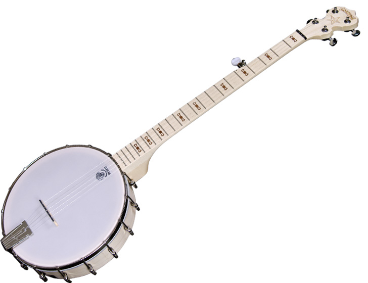

London

In this version, I styled the HTML "img" tag so that it has a border radius will always be 100% as wide as its container. Click here to see how.
I created a class called "span33" to hold the image. I added CSS properties so that anything classed "span33" will be 33% as wide as it's container, float left, and have a right margin to separate it from the text that floats around it. Try changing the width of the browser, to see how the styling responds.
London is the largest city of Europe with a surface of about 1.000 square kilometers and some 7 million inhabitants. This is the same amount as in 1900, when London was the biggest city on earth. Although it no longer ranks among the world's most populous cities, London is still one of the world's major financial and cultural capitals. London is divided into many districts which seem still to be functioning as separate villages, like they used to be in the past and they still have their own typical identities. Therefore London shows many faces with many different attractions for tourists, pituresque sceneries, historical monuments, many green parks, theatres, luxurious shops etcetera. The centre of the city owes it's layout to the great fire in 1666 and the Blitz in World War II. Both events left the city in ruins and when it was reconstructed, u rbanistic improvements were carried out to a great extent. After 1666 the streets were broadened and buildings had to be made out of stone. After the Blitz there was more focus on the development of the suburbs and the redevelopment of the slum areas.
London is the largest city of Europe with a surface of about 1.000 square kilometers and some 7 million inhabitants. This is the same amount as in 1900, when London was the biggest city on earth. Although it no longer ranks among the world's most populous cities, London is still one of the world's major financial and cultural capitals. London is divided into many districts which seem still to be functioning as separate villages, like they used to be in the past and they still have their own typical identities. Therefore London shows many faces with many different attractions for tourists, pituresque sceneries, historical monuments, many green parks, theatres, luxurious shops etcetera. The centre of the city owes it's layout to the great fire in 1666 and the Blitz in World War II. Both events left the city in ruins and when it was reconstructed, u rbanistic improvements were carried out to a great extent. After 1666 the streets were broadened and buildings had to be made out of stone. After the Blitz there was more focus on the development of the suburbs and the redevelopment of the slum areas.